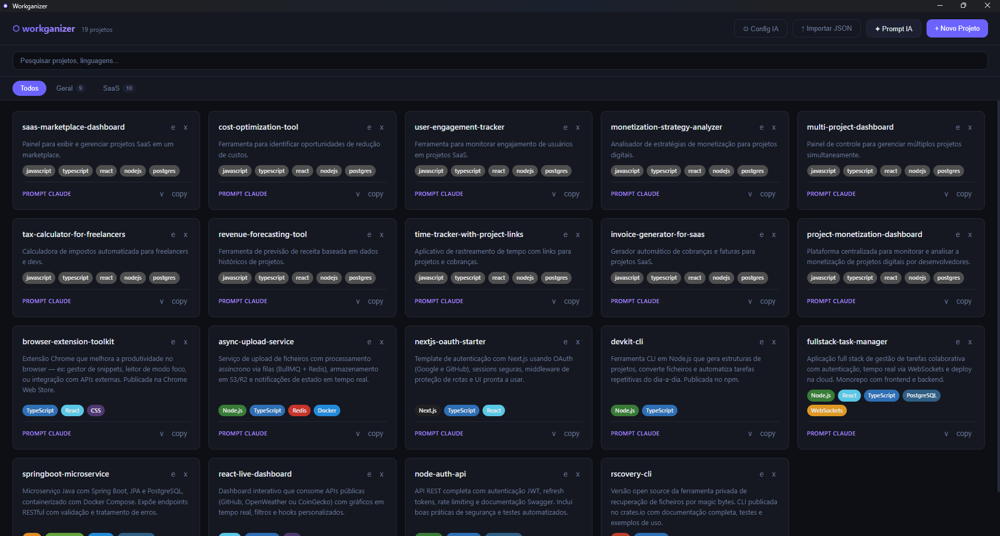

Organiza as tuas ideias de projetos.
Gera prompts prontos para o Claude.
workganizer é uma app desktop leve para guardar, categorizar e pesquisar ideias de projetos — com geração automática de prompts de implementação via Ollama local ou qualquer provider de IA compatível com OpenAI.
Funcionalidades
Organização por categorias
Separa os teus projetos em tabs — Web, Mobile, IA, ou as categorias que quiseres.
Pesquisa instantânea
Filtra por nome, ideia ou tecnologias em tempo real, sem sair do teclado.
Prompts gerados por IA
Descreve o que queres construir e a IA gera nome, stack, ideia e prompt pronto a colar no Claude.
Importação em massa
Importa dezenas de projetos de uma vez via ficheiro JSON.
Copiar com um clique
Copia o prompt de qualquer projeto direto para o clipboard.
100% local
Dados guardados em IndexedDB no teu dispositivo. Sem servidores, sem contas.
Configuração de IA flexível
Escolhe entre correr um modelo localmente ou ligar a um provider remoto — sem alterar código.
Modo Local (Ollama)
Usa qualquer modelo instalado no Ollama em localhost:11434. Privado, gratuito, sem internet.
URL: http://localhost:11434/v1/chat/completions
Modelo: qwen3:8bModo Remoto (OpenAI-compatible)
Liga a OpenAI, OpenRouter ou qualquer endpoint compatível, com a tua própria API key.
URL: https://api.openai.com/v1/chat/completions
Modelo: gpt-4o-mini
Key: sk-...A configuração fica guardada em %APPDATA%\workganizer\ai-config.json — nunca é enviada para nenhum servidor além do provider escolhido.
Interface
Dark theme, grid de cards, tabs de categoria e modais simples.
